Client explainer
Plain-English wording for what is changing, who needs to act, and what the practice can and cannot do.
Companies House IDV client communications
Plain-English client emails, FAQ wording, readiness tracker, reminder sequence and staff chase copy for practices that want the rollout to feel organised — not improvised.
Built like a practice file
Not an abstract compliance note. The deliverable is a named set of client-facing and staff-facing documents that can be dropped into your normal workflow.
Plain-English wording for what is changing, who needs to act, and what the practice can and cannot do.
Answers to the questions staff will hear repeatedly, with careful disclaimers around official guidance and legal advice.
A simple status sheet for directors, reminders, evidence notes and next action dates.
Polite chasers for clients who have not acknowledged the request, with stronger wording as deadlines approach.
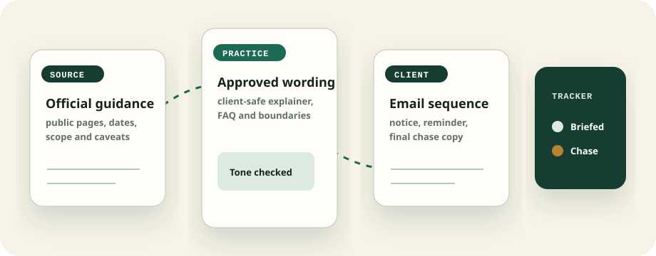
Why it matters
When a public compliance change lands, clients rarely read official pages first. They email the accountant. This pack turns that reactive support burden into a controlled, documented communication rhythm.
Partner briefing layer
The page now shows the pack as a senior-practice control file: one decision note for partners, one approved script for staff, and one evidence ledger for every director contact.
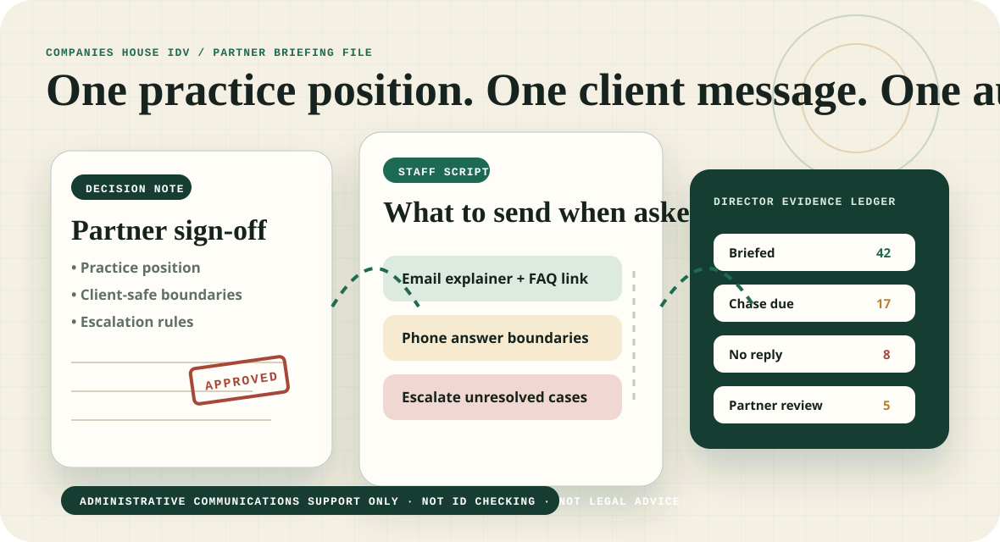
Deadline control room
Practices do not need more abstract guidance tabs. They need an operating board: who has been briefed, who is silent, which wording went out, and what staff should do next without inventing answers in the inbox.
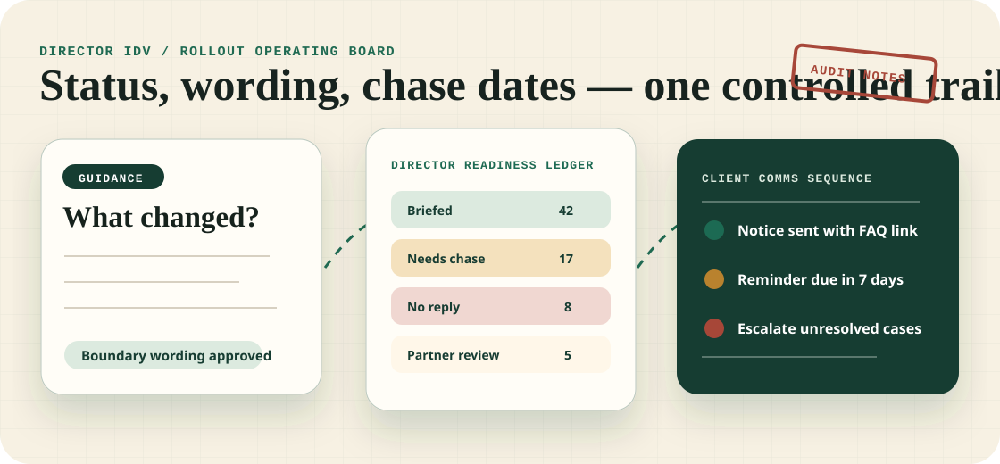
Proof-of-pack preview
This new specimen panel makes the site more conversion-led: an approved client email, readiness tracker, FAQ boundary and chase cadence appear as one senior-practice rollout file rather than a vague promise of templates.
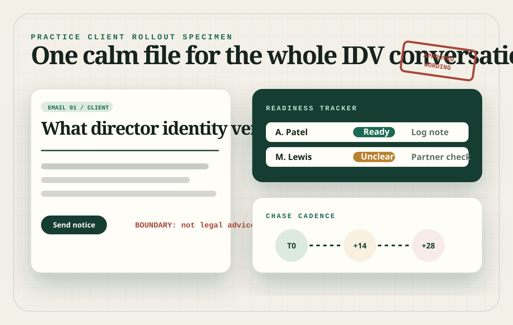
Correspondence desk
This upgrade makes the offer feel more tangible for accountancy buyers: client letter, FAQ card, readiness ledger and chase slip are framed as a controlled desk file the practice can run each week.
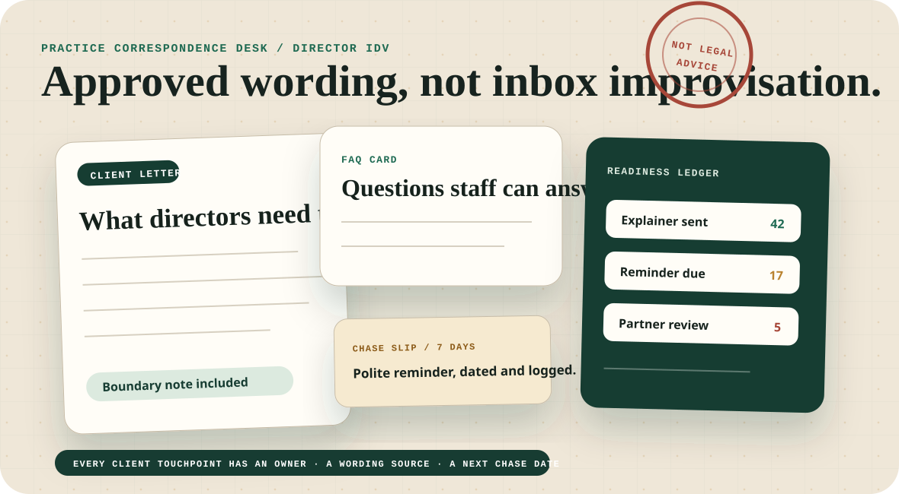
New upgrade · evidence matrix
The strongest buying signal is operational control. This new section shows the pack as a live practice matrix: directors grouped by risk, approved wording tied to each chase, and a partner-ready exception lane for anything staff should not answer ad hoc.
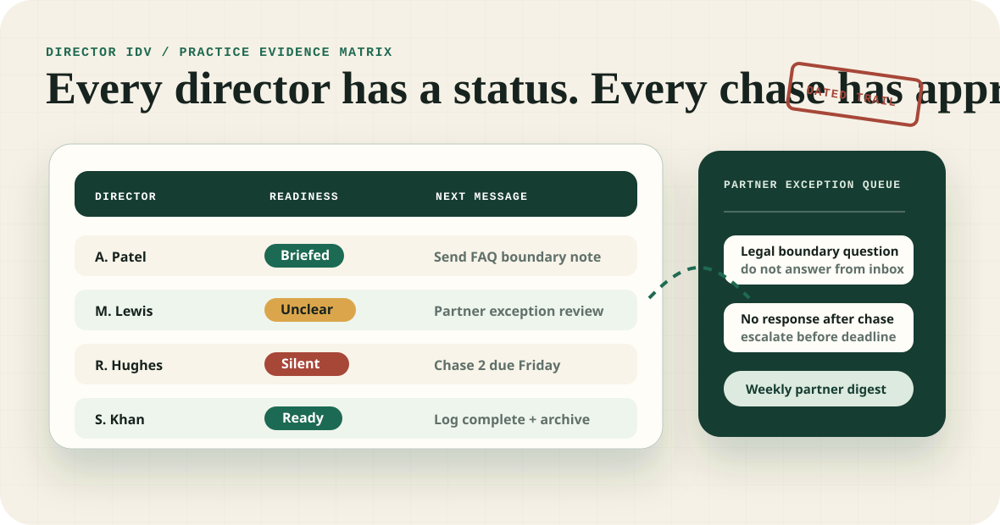
New upgrade · client question queue
This run adds a conversion proof layer for the real operational pain: directors ask repeat questions, staff improvise, and partners lose control of the compliance message. The queue shows how questions become approved answers, partner exceptions, and logged follow-up.
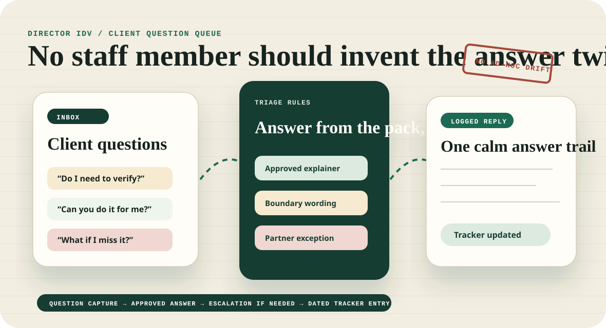
New upgrade · partner risk register
This run adds a more senior conversion layer: the pack is now framed as a partner-ready control register, separating routine client nudges from boundary questions, silent directors and deadline risks that need human judgement.
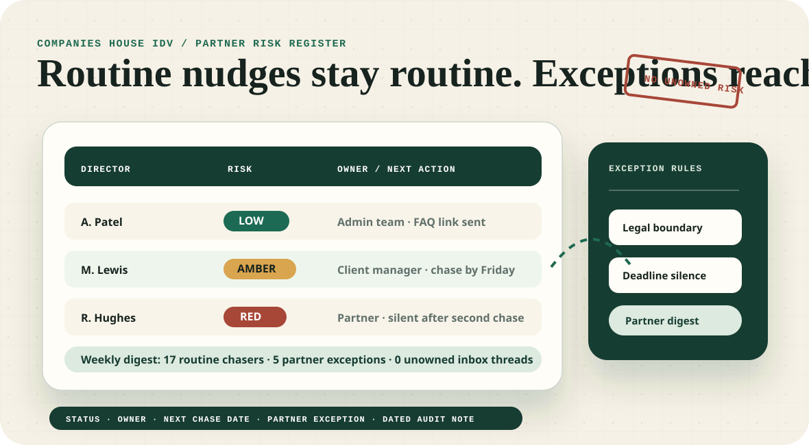
New upgrade · handover bundle
Accountancy buyers need confidence that the rollout can be handed to staff without message drift. This new conversion section shows the full bundle: partner decision note, client bulletin, staff script, director tracker and weekly digest.
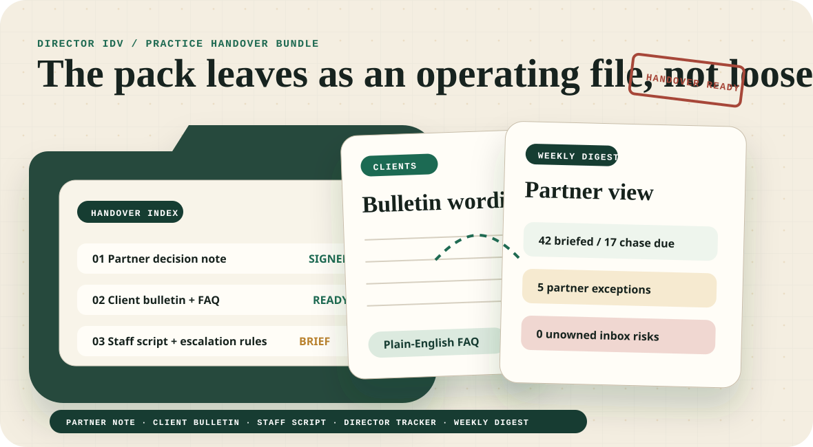
New upgrade · weekly partner digest
This run adds the missing management rhythm: a weekly digest that turns director statuses, repeated client questions, overdue chasers and partner exceptions into one concise practice-control note.
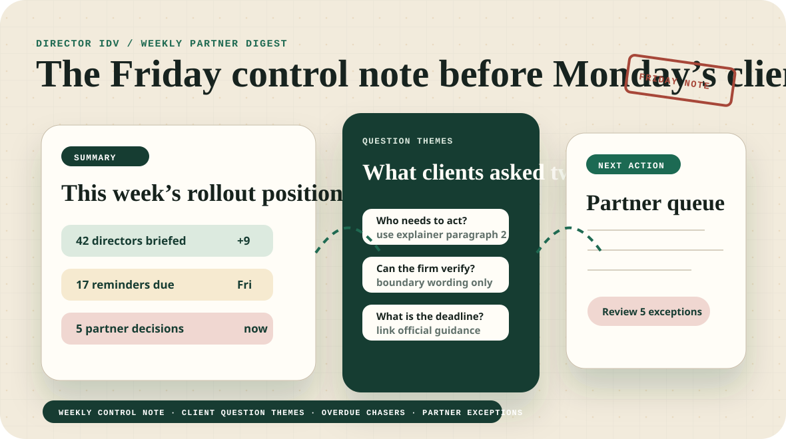
Delivery path
The first sale is intentionally small: buy the DIY pack, ask for setup, or retain weekly rollout support while the change is live.
New visual layer · practice rollout suite
The design now feels more like a senior practice manager’s rollout folder: director statuses, approved wording, chase cadence and boundary notes all visible at a glance.
New conversion layer · question bank
This pass adds a more buyer-specific proof object: a controlled question bank for reception, payroll, accounts and partner teams, with approved wording and clear boundaries.
New conversion layer · silent-client escalator
This pass adds a sharper practice-management object: a silence escalator that moves non-responders from polite reminder to partner exception, with approved wording and a visible audit note at each step.
New conversion layer · appointment book
This pass adds a more practice-native sales proof: the rollout becomes a weekly appointment book with client segments, approved touchpoints, call outcomes and partner exceptions all tied back to the tracker.
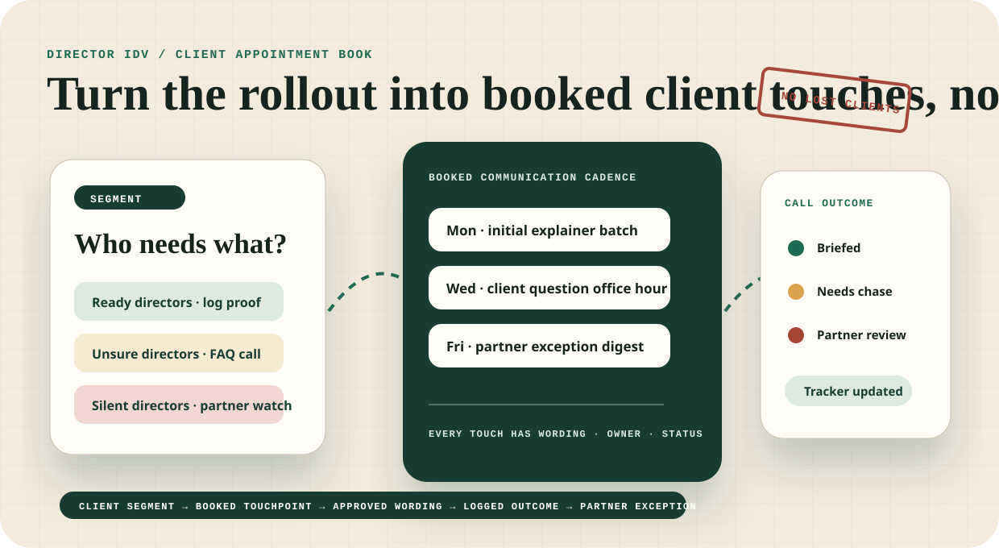
Controlled validation
Administrative communications support only. Not identity checking, not legal advice, and not an official Companies House service.